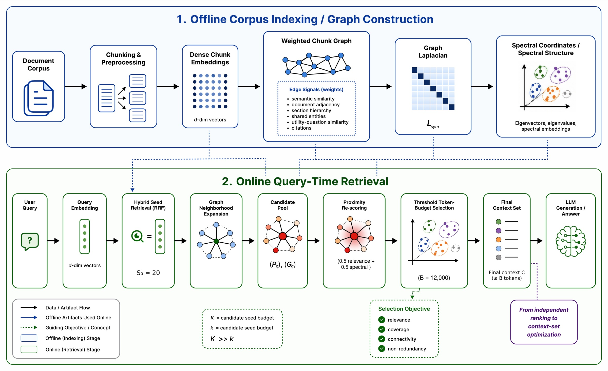

Dense retrieval returns the chunks that look most like your question. SpectRAG adds a ◇ weighted chunk graph and its ∿ spectral structure, then picks a context set that is relevant, non-redundant, connected and ✓ sufficient for multi-hop answers.
arxiv.org/abs/2610.36991 · github.com/SightAndCite/SpectRAG
Which obligations survive termination across the supplier and licence agreements?
Three obligation groups survive in both contracts. Confidentiality continues for five years S1, and the licence extends it to source code S2. Data return and deletion is governed by the DPA, which the supplier agreement incorporates by reference S3. Liability caps survive, but courts read them narrowly S4.
Illustrative session. The interface is the React + D3 app in frontend/.
Top-k scores every chunk on its own. It keeps picking near-duplicates from the closest document and skips the chunk that links to the second half of the answer. SpectRAG chooses the set as a whole.
A toy corpus of 72 chunks from 6 documents is indexed and queried in your browser with the same steps the code runs. Graph edges, Personalized PageRank, the Laplacian eigenvectors and k-means are all computed live.

Every signal links chunks for its own reason. Each is min-max normalised, the six are blended with weights that sum to 1, and edges with W < 0.1 are dropped. Hover a signal to see only its edges.
The normalised Laplacian of the chunk graph is decomposed once, at index time. Its smallest non-trivial eigenvectors give each chunk a 32-dimensional coordinate that encodes which community it belongs to. Two chunks can be far apart in embedding space and still sit next to each other here.
Starting from the seeds, relevance spreads over the chunk graph. Drag t to watch it reach chunks that share no words with the question but are linked to the ones that do. The heat kernel e−tL is computed from the same eigenvectors as above.
Every system uses the same generator. Numbers are taken from the SpectRAG paper (Tables 4, 6, 7 and 8).
Exact match (%) on 2,556 MultiHopRAG questions.
Gold-evidence recall (%) on MultiHopRAG. Hybrid leads at the top ranks; SpectRAG wins on breadth.
Exact match (%) by MultiHopRAG question type. Large dot = SpectRAG.
Left: full index on MultiHopRAG. Right: graph nodes (chunks vs LLM-extracted entities).
n = 20 questions on 30 documents, so one question moves the score 5 points. Treat the 60 vs 55 lead as weak evidence.
Embeddings run locally through Ollama. Switch two config flags and indexing is fully local too: no API key, no cost.
Python 3.11, Ollama, Docker and Node 18+. Neo4j starts by itself the first time the server runs. Full instructions are in the official repository.
Zafer Sahinoglu · Abdulazeez Mohammed · Buse Yaren Kazangirler · Cahit Berkay Kazangirler — 2026
@misc{sahinoglu2026spectragweightedchunkgraphs,
title={SpectRAG: Weighted Chunk Graphs for Token-Budgeted
Context Selection in Multi-Hop Retrieval-Augmented Generation},
author={Zafer Sahinoglu and Abdulazeez Mohammed and
Buse Yaren Kazangirler and Cahit Berkay Kazangirler},
year={2026},
eprint={2610.36991},
archivePrefix={arXiv},
primaryClass={cs.AI},
url={https://arxiv.org/abs/2610.36991},
}